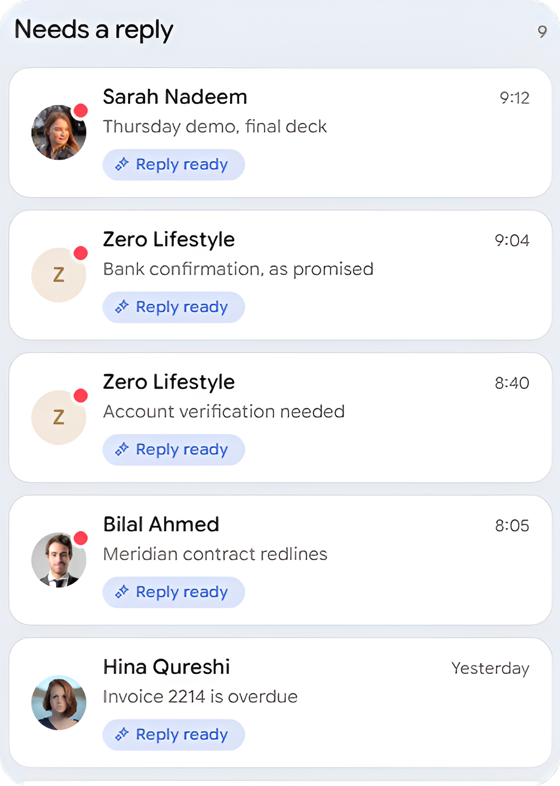
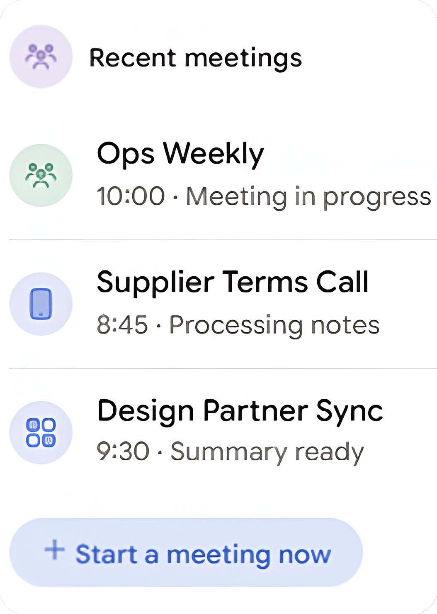
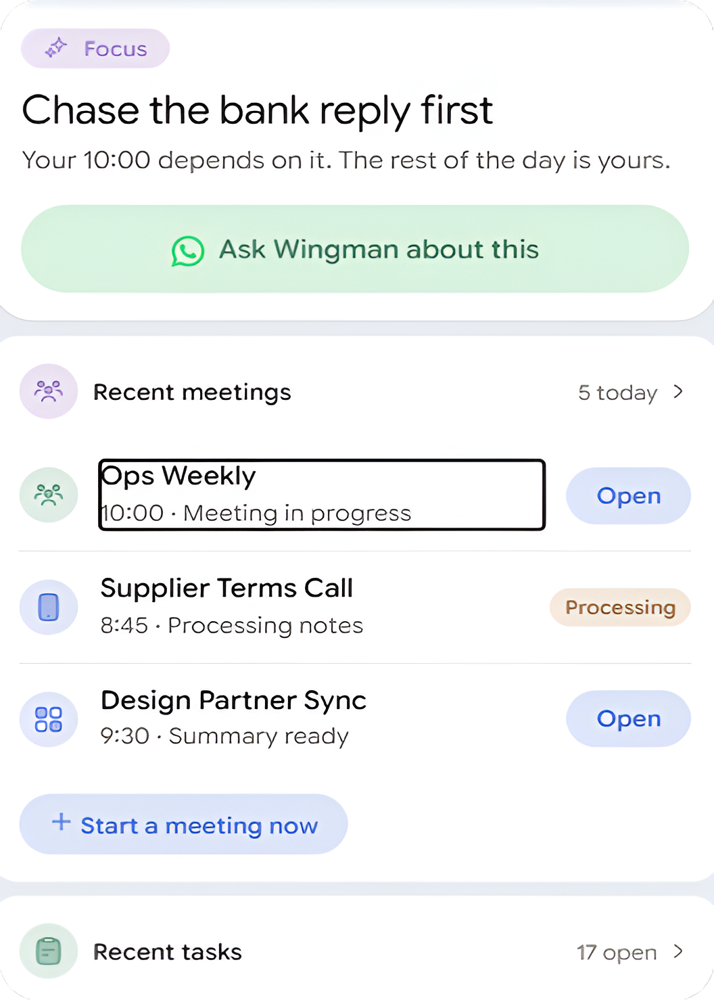
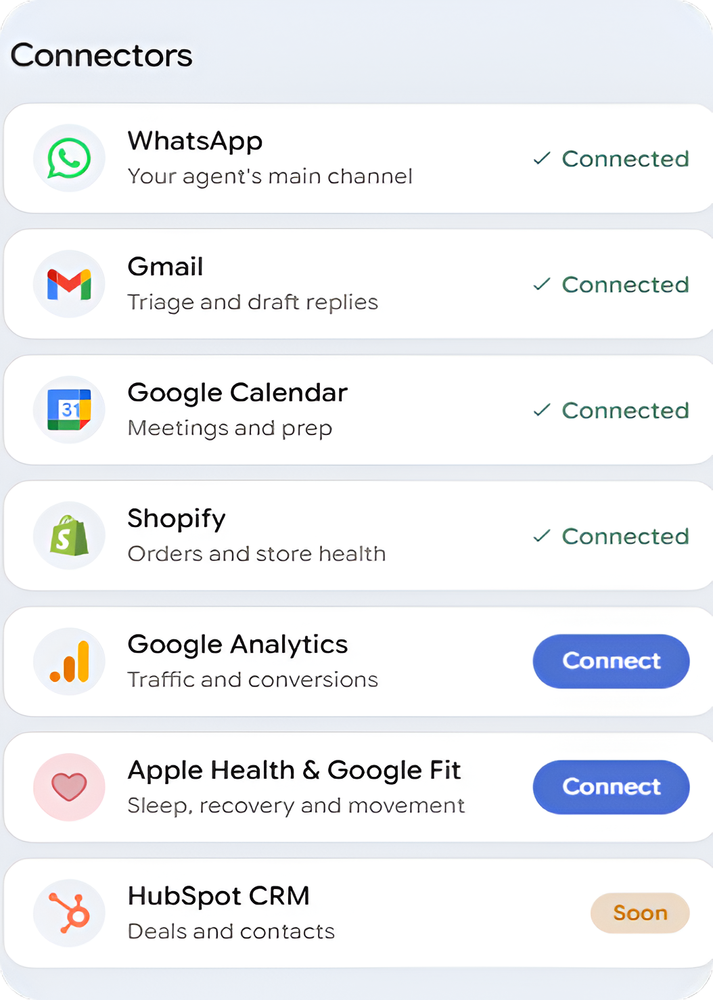
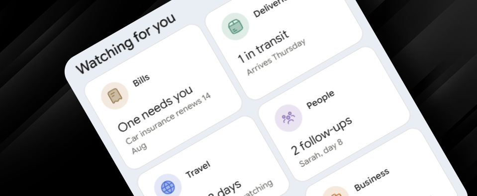

Unified AI Chief of Staff
Brings your inbox, calendar, store, CRM, analytics and pipeline into one intelligent system instead of disconnected tools.
Think of Wingman as your AI Chief of Staff, someone who handles the routine tasks for you, knows what's important and requires your attention, is proactive and doesn't depend on follow-ups, takes action on your behalf, and manages your personal stuff and business.
Get your Wingmanrecommend → approve → execute.




Brings your inbox, calendar, store, CRM, analytics and pipeline into one intelligent system instead of disconnected tools.
Wingman messages you first with a ranked summary of what needs your attention, so you don't have to constantly check dashboards or know what to ask.
Learns your habits, responses, preferences, routes and decisions, becoming more personalised and useful over time.
Wingman can recommend actions, prepare responses and execute them only after you approve: Recommend → Approve → Execute.
Accesses specialized AI expertise across areas like Marketing, CFO and Operations, switching between them simply by asking.
Designed to live where you already communicate, with WhatsApp as the initial channel and support for two-way voice notes, audio briefings, and alerts.
Not another app you have to download and manage. Wingman fits into the way you already communicate, making it feel familiar and accessible.
It learns what you care about, how you respond, and which information deserves your attention. Not just artificial intelligence. Intelligence that knows you.
When everything feels important and urgent, nothing really gets done. So, Wingman takes over to do what you were trying to do with a bunch of other apps, like Reminders, Notes, and all the productivity tools that you just snooze.
Get your WingmanNo, it won't help you squeeze 37 tasks into a Tuesday. Hustle harder, optimize every second, and all of that. No, thanks.
Don't expect another empty chat box waiting for you to start the conversation. Wingman isn't a question-answer machine dressed up with a WhatsApp number.
If you wanted to spend your morning studying graphs, reports and red notification bubbles, you already have plenty of software for that.
It won't make big moves behind your back. You stay in the loop. It can help you move faster, but you're still driving.

You've got a lot on your plate, you said. Wingman prioritizes your to-do list, takes action on your behalf, and keeps things in order, so you have the headspace for things that really need your attention.
Get your WingmanDrop your email and stay in the loop for launches, updates, and whatever Wingman pulls out of its sleeve next.